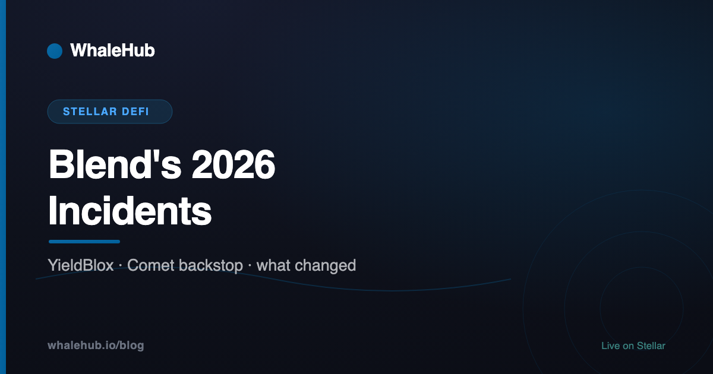

Blend's 2026 Incidents: YieldBlox and the Comet Backstop, Explained

Blend is Stellar's largest lending protocol, and 2026 gave it two very different incidents: a $10M oracle manipulation in one isolated pool in February, and a $717K exploit of the AMM holding its backstop in August. Both are routinely reported as "Blend was hacked". Neither was a bug in the lending contracts, and the difference matters if you are deciding where to deposit.
February: the community-run YieldBlox pool priced a collateral token from a market that could be moved with one trade. August: the Comet pool that holds backstop deposits had a bug in same-asset swaps. Different layers, different fixes. Blend's lending pools held roughly $150–165M throughout, per DefiLlama.
Three layers, three kinds of risk
A Blend deposit relies on three separate things: the pool contracts that hold loans, the pool's configuration (which assets it accepts and how it prices them), and the backstop that absorbs bad debt. The 2026 incidents hit the second and third, not the first.
Blend V2 is a set of isolated pools. Anyone can deploy one, choose its collateral and borrowable assets, set collateral factors and pick an oracle. Script3 wrote the contracts; pool operators such as the YieldBlox DAO run the configuration. Each pool also has a backstop: depositors lock BLND-USDC liquidity-pool tokens, earn a share of interest, and take first loss if the pool accrues bad debt. That LP token lives in a Comet weighted pool. For the full mechanics, see what is Blend.
February: the YieldBlox oracle exploit
On 22 February 2026, an attacker drained roughly $10M from the YieldBlox pool. The pool let users borrow XLM and USDC against USTRY, a tokenised Treasury product, and priced USTRY through a Reflector feed that sourced from the USTRY/USDC market on the Stellar DEX.
That market was nearly empty. According to BlockSec's analysis, the attacker cleared the normal orders and placed abnormal ones, moving USTRY from about $1.06 to about $107. The feed reported the new price, the pool valued the attacker's USTRY collateral at roughly a hundred times its worth, and the attacker borrowed about 1M USDC and 61.2M XLM against it.
Script3's post-mortem describes the attack as "isolated to a single asset in a single community managed pool", possible because USTRY liquidity had been temporarily removed and no other trades occurred for 15 minutes. The YieldBlox backstop was liquidated to cover bad debt, with about 4.38M BLND-USDC LP tokens (about $1.3M) auctioned.
The lesson is the oldest one in DeFi lending: collateral is only as safe as the market that prices it. A lending contract can be flawless and still lend $10M against a price that one trade can set. For more on this failure class, see DeFi risks.
August: the Comet backstop exploit
On 25 August 2026, the Comet BLND-USDC pool that holds Blend's backstop deposits was exploited for about $717K. The mechanism was a bug in same-asset swaps — swapping a token for itself — which the attacker repeated 1,459 times, according to indexers that later had to filter those swaps out of their price data. Blend paused its backstop in response.
This is a different layer from February. Lending pools were not the target; the loss fell on the pool that backstop depositors hold their stake in. As of this writing we have not found an official post-mortem for the Comet incident, so treat the details above as reported rather than confirmed.
What the TVL numbers actually show
Several outlets reported that Blend's TVL "fell to near zero" after August. DefiLlama's own data for Blend's lending pools does not show that:
| Date (2026) | Blend lending pools TVL |
|---|---|
| 22 Aug | $171.5M |
| 25 Aug (exploit) | $164.2M |
| 28 Aug | $150.9M |
| 10 Sep | $148.2M |
| 28 Sep | $158–161M |
What did fall sharply was Stellar DeFi TVL as a whole, from about $270M to about $98M between 22 and 27 August. DefiLlama's separate "Blend Backstop" entry reads $0, but it read $0 before the exploit too, so it cannot be used to measure the incident.
What to check before depositing
- Every collateral asset's price source. A pool is exposed to its weakest collateral, not just the asset you deposit. Ask where each price comes from and how much it would cost to move that market.
- Market depth behind the feed. A feed sourced from a thin DEX market is a feed an attacker can set.
- Backstop status. The backstop is the first-loss layer. If it is paused or depleted, bad debt falls on lenders.
- Who operates the pool. Contracts are shared, configuration is not. Two Blend pools can carry very different risk.
- Audits in scope. An audit of the pool contracts says nothing about a pool's oracle choice. See what an audit proves.
The takeaway
Both 2026 incidents were real losses, and both happened outside the code most people mean when they say "Blend". That is not a reassurance — it is a map. Isolated pools move risk into configuration and backstops, so that is where depositors need to look.
Sources: BlockSec, "YieldBlox DAO incident on Stellar"; Script3 post-mortem on X (@script3official); DefiLlama (blend-pools-v2); rumblefishdev/stellar-prices-api PR #345; Bitget News and DailyCoin coverage of the August exploit.
Frequently asked questions
Was Blend hacked in 2026?
Two incidents touched the Blend ecosystem in 2026, but neither was a flaw in Blend V2's pool contracts. In February an attacker manipulated the price feed for one collateral asset in the community-run YieldBlox pool and borrowed about $10M against it. In August a bug in the Comet AMM that holds Blend's backstop deposits was exploited for about $717K.
Were Blend deposits lost in the Comet exploit?
The loss was in the Comet BLND-USDC pool, which holds backstop deposits, not in Blend's lending pools. Blend paused its backstop in response. DefiLlama shows Blend's lending pools holding roughly $150–165M before and after the incident, which contradicts reports that Blend's TVL fell to near zero.
What caused the YieldBlox exploit?
The pool accepted USTRY as collateral and priced it from a Reflector feed that sourced from a very thin USTRY/USDC market on the Stellar DEX. The attacker moved that market from about $1.06 to about $107, the oracle reported the inflated price, and the attacker borrowed about 1M USDC and 61M XLM against collateral worth a fraction of that.
Is it safe to use Blend now?
That depends on which pool you use. Blend pools are isolated: each has its own collateral list, oracle settings and backstop. Check how every collateral asset in the pool is priced, how deep its market is, and the current state of the backstop before depositing.
Yield on Stellar, with the risks written down
WhaleHub stakes AQUA, aggregates ICE voting power and auto-compounds Aquarius rewards — and publishes how each part can fail.
Launch the appThis article is for education only and is not financial advice. Figures are taken from the sources linked in the text as of the date shown and change constantly. Verify them before acting.